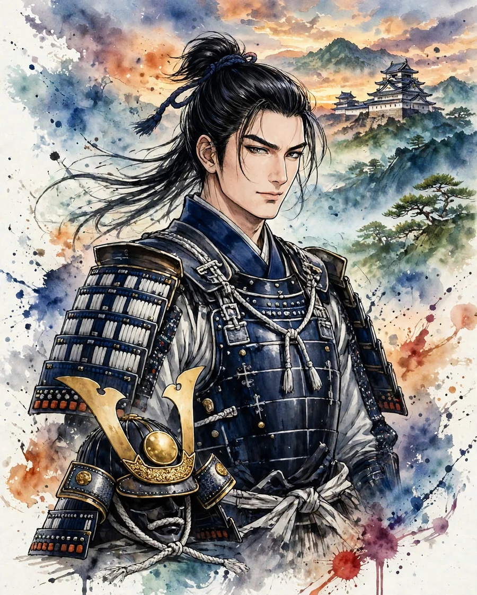

Naoe Kanetsugu
直江兼続 (なおえ かねつぐ)

| Years | 1560–1620 |
|---|---|
| House | Uesugi clan |
| Region | Tohoku |
| Era | Azuchi-Momoyama period |
Overview
A retainer of Uesugi Kagekatsu, he bore responsibility for the Uesugi house's government and military affairs. He is known for his helmet bearing the character 'ai' (love) as its frontal crest. Before Sekigahara, his letter to Tokugawa Ieyasu (the Naoe Letter) is famous, and after the war he built the foundations of the domain government of the Yonezawa Domain.
Life
He is said to have been born into the family of a retainer of Nagao Masakage, lord of Sakato Castle in Echigo, and from a young age he became a close attendant of Uesugi Kagekatsu. Winning his lord's trust, he became the chief administrator of the Uesugi house, and under the Toyotomi government he managed Aizu, a domain of 1.2 million koku. The 'Naoe Letter,' said to be his reply in 1600 when Tokugawa Ieyasu demanded that he march up to the Kyoto area, is famous in the flow of events toward Sekigahara. At Sekigahara he fought Mogami Yoshiaki and others (the Keicho Dewa Campaign), and after the war, receiving a reduction of his fief to 300,000 koku, he moved to Yonezawa and devoted himself to rebuilding the domain government through the development of the castle town, flood control, and the opening of new rice fields. He died in 1620.
In battle
Kanetsugu's generalship was one with government. It was characterized by the building of foundations for fighting: the improvement of roads and castles in the Aizu period, and the planning of wartime logistics. In the Keicho Dewa Campaign he faced the Mogami army in the fighting over Hasedo Castle, and on receiving the report of the defeat at Sekigahara, he is said to have withdrawn while keeping his losses small.
Arms and equipment
The 'ai' (love) crest on Kanetsugu's helmet is widely known, and its origin is explained in connection with faith in Atago Gongen or in Aizen Myo-o (Aizen, the Wisdom King of Love). Anecdotes of his own martial skill are few. As for the Naoe Letter, there is debate over whether the surviving copies are the original text of the time just as it was, and the image of it as a provocative challenge has been strengthened in later stories.
Character and records
Kanetsugu is depicted as a chief administrator who loved learning and placed importance on loyalty to his lord and consideration for the people of his domain. The reform of the Yonezawa domain government became the foundation on which the Uesugi house continued until the end of the Edo period. His modern fame rose when he became the protagonist of the drama Tenchijin, but it is important to read separately the Kanetsugu of story and the Kanetsugu of the sources.
In literature
tenchijin, sekigahara, tokugawa
Tenchijin is an epic novel with Kanetsugu as its protagonist. Sekigahara is an epic novel that also depicts the process from the Uesugi house's raising of arms to Sekigahara, and Kanetsugu appears as one of its major figures. In Tokugawa Ieyasu as well, the age of the Uesugi house and Kanetsugu around the time of Sekigahara can be traced.
Castles connected with Naoe Kanetsugu
Recommended books on the age of the warlords
Castle History
Japanese Castles 1540–1640
Author: Stephen Turnbull
The great castles of Japan's warring-states era: how the strongholds of the daimyo were built, defended and attacked, explained by the leading English-language historian of samurai warfare, with illustrations throughout.
View at Pickwick BookshopCheck the price at Pickwick Bookshop
Castle History
Japanese Castles AD 250–1540
Author: Stephen Turnbull
The earlier half of the story: from the first fortifications of ancient Japan through the rise of the first true castles, again by Stephen Turnbull. Read it before the 1540–1640 volume to cover the whole arc.
View at Barnes & NobleCheck the price at Barnes & Noble
Castle Guide
Samurai Castles: History / Architecture / Visitors' Guides
Hundreds of color photographs and close-up detail on Japan's most important surviving samurai castles — their history, design and military features, with guidance for visitors. The best single companion for castle sightseeing.
View at Barnes & NobleCheck the price at Barnes & Noble
Book links on this page go to the retailers' product pages. Prices and availability are shown on the retailer's page.